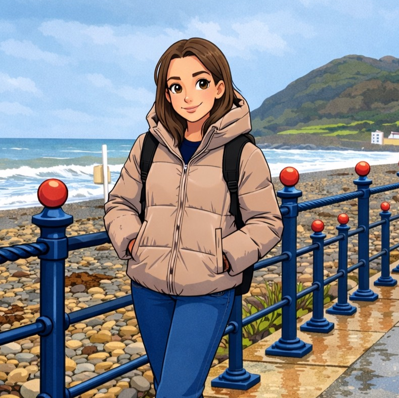
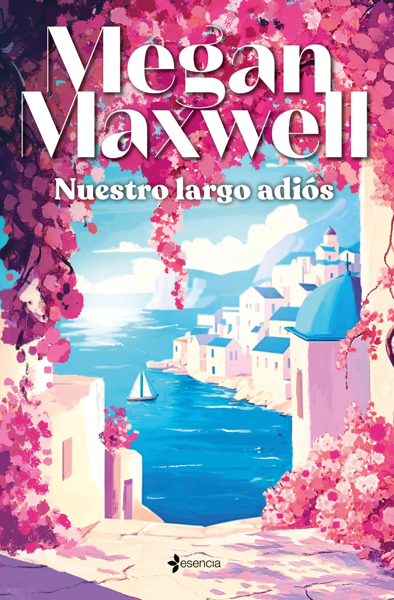
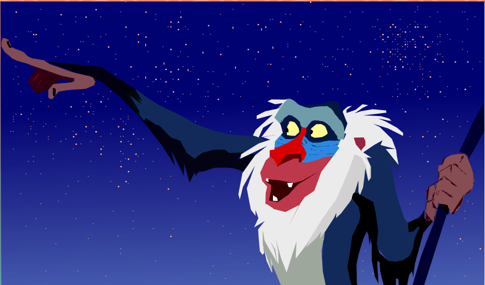
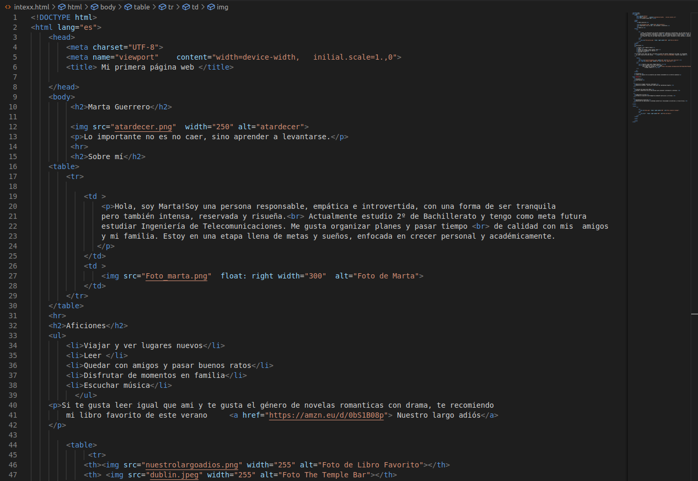

Sobre mí
|
Hola, soy Marta! Soy una persona responsable, empática e introvertida, con una forma de ser tranquila pero también intensa, reservada y risueña. Actualmente estudio 2º de Bachillerato y tengo como meta futura estudiar Ingeniería de Telecomunicaciones . Me gusta organizar planes y pasar tiempo de calidad con mis amigos y mi familia. Estoy en una etapa llena de metas y sueños, enfocada en crecer personal y académicamente. |
 |
Aficiones
- Viajar y ver lugares nuevos
- Leer
- Quedar con amigos y pasar buenos ratos
- Disfrutar de momentos en familia
- Escuchar música
Si te gusta leer igual que ami y te gusta el género de novelas romanticas con drama, te recomiendo mi libro favorito de este verano Nuestro largo adiós
 |
 |
|---|---|
Nuestro largo adiós (Megan Maxwell) |
Esta fotografía es de mi ultimo viaje.
|
Proyectos
Estos son algunos de los proyectos que estudio actualmente en mi entorno académico.
| Proyecto | Descripción |
|---|---|
| Edición de imagen vectorial (Inkscape) | Edición de diseños vectoriales como parte del aprendizaje digital. |
| Creación de página web (HTML) | Diseño y desarrollo de una web personal para presentar información e intereses. |
| Inducción en Física | Estudio de inducción electromagnética mediante ejercicios y prácticas. |
| Aprendizaje de matrices | Resolución de operaciones y problemas matemáticos relacionados con matrices y cálculo básico. |
|
 Proyecto de imagen vectorial (Inkcape) |
 Proyecto de mi primera página web en HTML. |